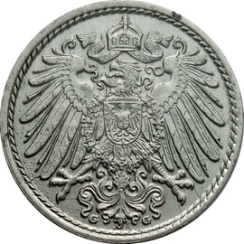
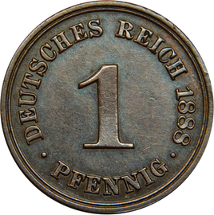

Welcome to Lazenby Coin Facts!
Welcome to Lazenby Coin Facts!Germany
Germany first issued coins in 1873 after German unification. Between 1873 and 1922,
8 denominations were issued: 1, 2, 5, 10, 20 and 50 pfennigs, and 1 mark. There are over
1,200 unique issues in this series, ranging in value from a few cents to tens of thousands
This web page will document some key dates from eah denomination.
 1 Pfennig
The 1 Pfennig was the smallest denomination issued by the German Empire and was equal
to 1/100th of a Mark. Listed below are some key dates and their values.
- 1873 A, value in F: $215
- 1873 B, value in F: $300
- 1873 D, value in F: $300
- 1887 E w/ large dot after pfennig, value in XF: $9,000